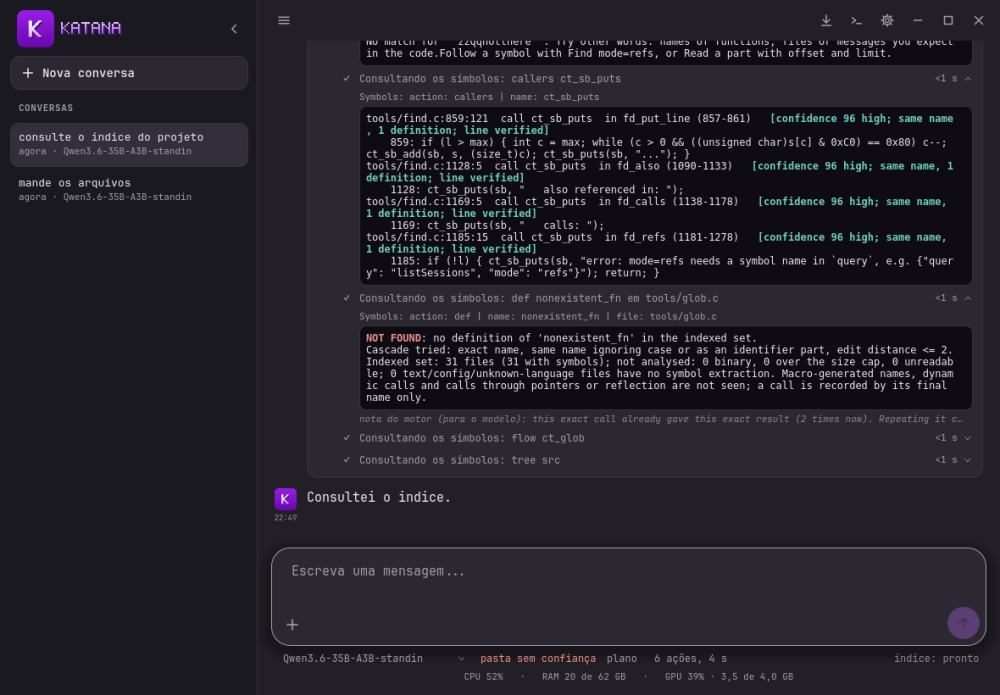
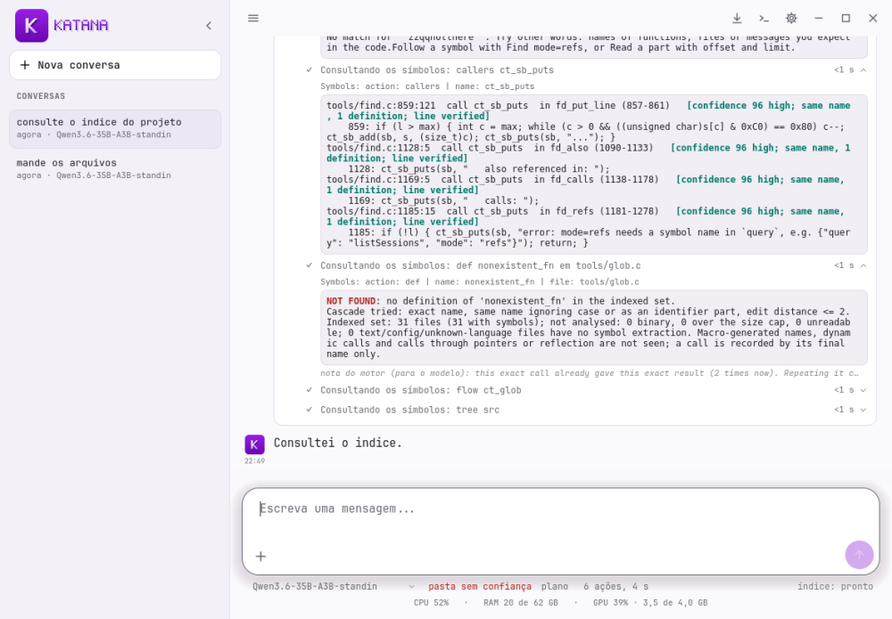
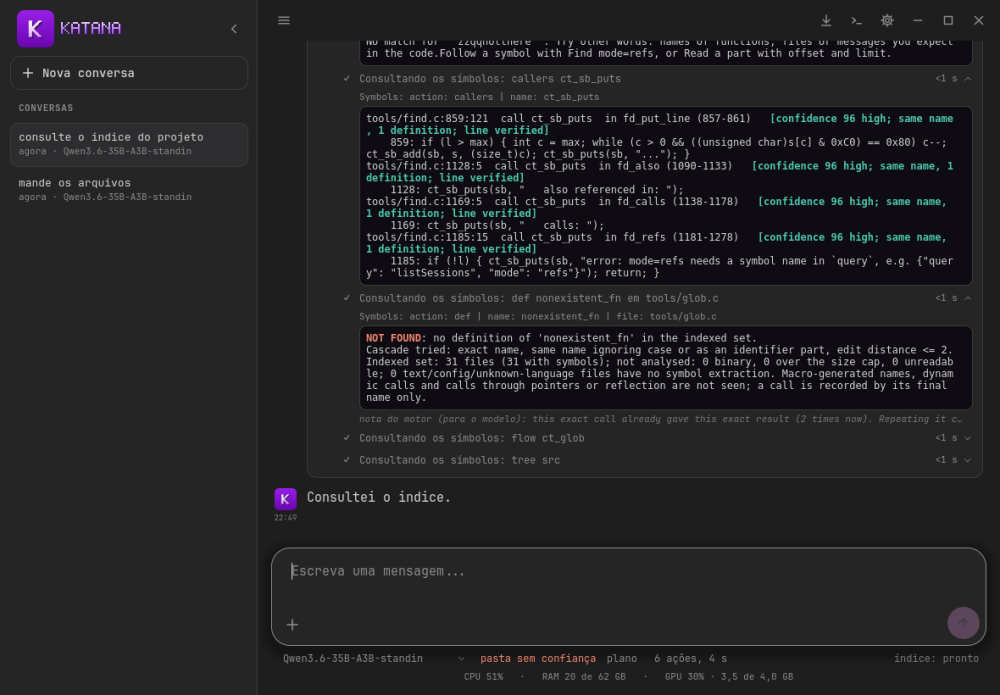
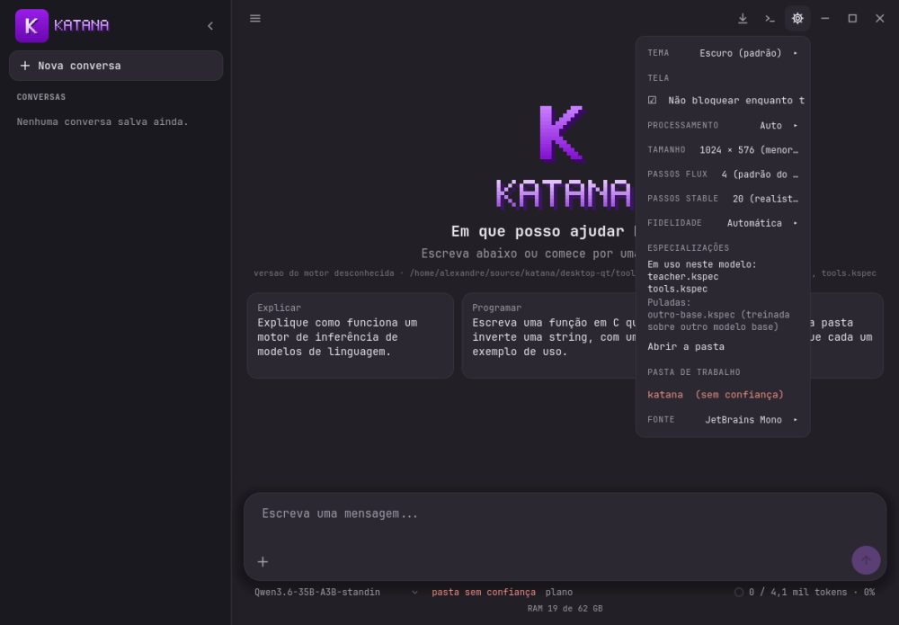
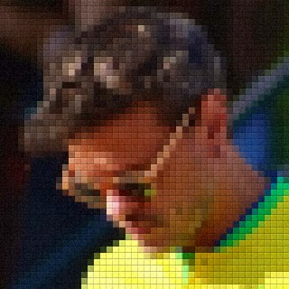

An inference engine written from scratch in C that runs large Mixture-of-Experts models on a laptop GPU, with a tool-using agent and a native desktop app on top. No framework. No external service.
Screenshots come from the desktop's test harness, with a stand-in engine instead of a model. The app's interface is in Portuguese.
Cone engine, written from scratch; nothing linked beyond the C runtime
4 GBof VRAM on the laptop GPU it is developed on
24.9 tok/sQwen3.6-35B-A3B generation on that laptop (measured, see below)
0external services the engine calls
Features
An engine, an agent and an app
The engine reads GGUF models and runs them on the CPU, the GPU (Vulkan or OpenCL, loaded from the driver at run time, no SDK) or both. On top of it sit an agent with tools and a native desktop window.
Agent with tools
Shell, files, code search, a plan list, web search and fetch, persistent memory and any MCP server. Every call is shown and logged; results reach the model as data, not instructions.
Find and Symbols
Code search that says how sure it is and what it did not find: definitions, callers, what a change reaches, from an index of more than 60 languages and formats.
Reading the web new
A source router sends each question to the sources that fit it; every page comes back saying whether it is complete, partial, an empty shell or blocked.
Terminal and passwords new
Commands run in a real pseudo-terminal. A password or two-factor code goes from a masked field in the desktop straight to the program, never through the model.
Talk while it works new
A message sent mid-task reaches the model right after the current tool call. The agent notices when it loops, and changes approach or says what blocks it.
MoE with a VRAM cache
Attention stays in VRAM, hot experts take VRAM slots, cold ones run on the CPU from the memory-mapped file, and a background loader promotes the ones that heat up.
Native desktop
A Qt 6 window, no browser: conversations, tool cards, the plan, a context meter and a built-in terminal. Conversations are saved and resume with their context.
Models and specializations
Pulls a pinned, checksummed model file. katana train writes .kspec specializations, loaded from ~/.katana/specs and listed in the app's settings.
Items marked new compile and have had narrow checks, but have not been measured against real tasks.
A closer look
Search that shows its work
Find · Symbols


Finding things in code
Find chooses how to search (a name, quoted text, or a description), re-reads files to check what it reports, and says which folders it left out and why.
Symbols answers where a name is defined, who calls it, what it calls and what a change would reach; every answer carries a confidence level.
The index is built on demand by a background crawler and kept fresh by a file watcher.
No remote service. A small local embedding model, when installed, only reorders candidates. New, not yet in the model's training, and not measured.
IDE view

Pages that tell their state
Search that routes. A registry of sources (code hosting, technical Q&A, a model hub, an encyclopedia, news feeds, papers), extensible with a plain text file. Each question goes to two to four of them in parallel; a general search engine is the last step.
States, not guesses. A page that only builds itself in the browser is read again with a headless browser, then through the machine-readable twins some sites publish.
No empty answers. When a page cannot be read, the result names the next place to look.
New. It compiles and has had narrow checks; not measured. The picture shows the desktop's IDE view, not the web tools.
Models
What it runs
Developed and tested with Qwen3.6-35B-A3B. Laptop with an RTX 3050 (4 GB), i7-11800H, 64 GB RAM, Linux, Vulkan.
Qwen3.6-35B-A3B
Q4_K_M~21 GB on disk24.9 tok/s35B, ~3B active
The model katana is built around. ./katana pull qwen3.6-35b downloads Qwen3.6-35B-A3B-UD-Q4_K_M.gguf (22 GB; 32 GB of RAM or more recommended) and checks it against a pinned revision and checksum.
Also works, and can be picked in the desktop's model selector.
Alternating runs on the same machine, because the machine drifts over time; taken before the latest changes to the agent and not repeated since. Your numbers will differ with your hardware. katana convert turns a Hugging Face checkpoint into GGUF for this architecture; it has only been checked on tiny test checkpoints.
Where it looks for models
.gguf files from a models folder, searched in this order:
KATANA_MODELS
models= in .katana/katana.cfg or ~/.katana/katana.cfg
./models
the models folder beside the binary
~/.katana/models
Which one it picks
The first that applies; it prints which one and why:
--model (a name, part of one, or a path)
KATANA_MODEL
model= in the config
the model the desktop app used last
the recommended one, then the largest installed
./katana agent model.gguf still takes an explicit file.
Run it
From source, in a few commands
Linux only for now: the Windows build was never compiled or tested.
engine and agent
$ sh build.sh # one C file, gcc$ ./katana catalog # what fits here$ ./katana pull qwen3.6-35b # download, verify$ ./katana # chat with tools$ ./katana --model qwen # or name a model
desktop app
$ sh build.sh # 1. the engine -> ./katana$ sh desktop-qt/build.sh # 2. the app$ mkdir -p models && cp model.gguf models/ # 3. a GGUF model$ ./desktop-qt/build/katana-desktop-qt # 4. from the repository root
Heads up: by default the agent acts on your machine without asking. Set KATANA_CONFIRM=1 to have it ask first.
Console
./katana in your project folder, or ./katana -p "request" for a single answer. The agent with all its tools, in the terminal.
Desktop
Needs Qt 6.5+ and CMake 3.21+. On Ubuntu or Debian: qt6-base-dev, qt6-declarative-dev, qml6-module-qtquick-controls.
Web work in progress
katana web opens the desktop's window in your browser on 127.0.0.1 with a token. Not run with a real model yet.
katana serve model.gguf still serves a plain chat page and an OpenAI-compatible API on your machine.
Desktop
A native window for the agent
Enter sends, Shift+Enter breaks the line, Esc stops the answer, Ctrl+` opens a built-in terminal. You can keep typing while the agent works.
Each tool call is a card: what was asked, what came back, how long it took.

Settings: specializations in use for the current model, and the skipped ones with the reason.Both themes: light and dark.
Honest limits
What it is not
katana is a personal, from-scratch engine, developed and tested on a single Linux machine. It supports the architectures it implements (Qwen3.6, Gemma 4, Qwen3 MoE, OLMoE, dense Llama and Qwen, DeepSeek-V2, GLM-4 and gpt-oss), not every GGUF file. It is not a drop-in replacement for a mature, widely used inference stack, and the Windows build is not tested here. For how the pieces fit, read the architecture.
About me
Who builds it

I am Alexandre Simões, and katana is my project. I wrote it to understand how language models really run, by building the whole path myself: reading the model file, the tokenizer, the math on the CPU and the GPU, the memory management that lets a big model fit in a small card, and the agent that puts it to work.
The engine, the agent and the desktop app live in my own repository. This page describes them as they are today, including what does not work yet.